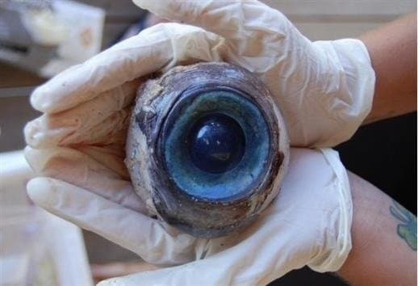
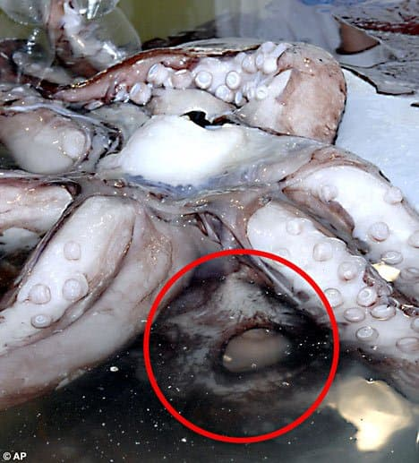
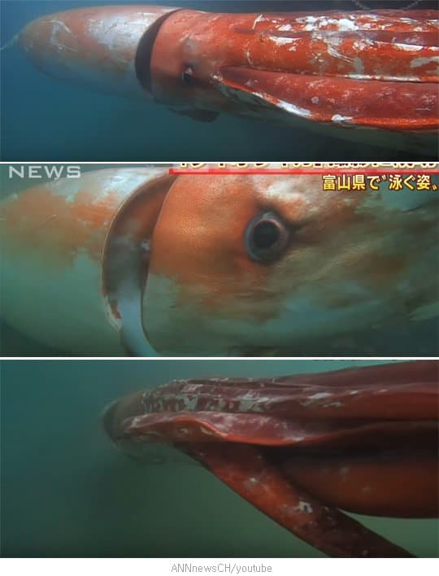
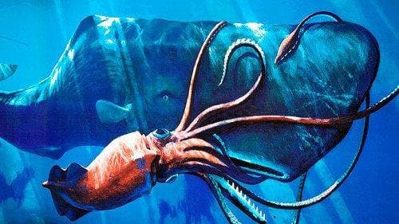

 대왕오징어의 눈은 지름이 25cm가량 되는데 지구에서 가장 거대한 눈을 가진 동물이다
그러니까 이 사진의 눈도 작은 편이고  거의 농구공만한 크기를 가진 것이다 눈을 마주치면 상당히 무섭겠지  단순히 눈이 크기만 한 것도 아니고 완성도 자체가 높은데 여러가지 단점으로 떡칠된 좆간의 눈깔에 비해 훨씬 효율적이고 시력 자체도 높다 몇가지만 예를 들어도 좆간은 눈깔에 시신경 지나가서 시야 다 가리는걸 뇌에서 필터 돌려서 처리하느라 에너지를 존나 낭비하고 잘못 설계된 구조 때문에 맹점까지 존재하는데 오징어는 이딴거 다 없으면서 시력 자체도 훨씬 우월하다 눈깔에 한정한다면 오징어가 좆간보다 훨씬 발전된 생물인 것이다 솦붕이 한정으론 외모도 앞서고 있겠군  그치만 오징어가 이 눈깔을 별로 자랑스러워할 것 같진 않은데 왜냐면 살기 위해 눈을 집중진화시킨 것이기 때문이다 대왕오징어의 천적은 바다의 깡패 향유고래다 향유고래는 체급만 따져도 대왕오징어의 수십배인데 대가리에선 초음파가 나가는 맵핵을 키고 다녀서 심해의 어둠 속에서도 대왕오징어를 바로 발견할 수 있다 대왕오징어의 눈은 이 씹사기 포식자를 피할 수 있는 유일한 수단이다. 빛이 하나도 없는 심해에서도 120m 거리에서 향유고래를 발견할 수는 있는데...문제는 향유고래가 더 빠른데다가 근접전 들어가면 바로 털리고 심지어 스턴기도 건다는거다 음파 집중해서 박으면 꼼짝 못해 맵핵을 키고 다니는 씹새끼를 시력으로 상대해야 하는 시점에서 대왕오징어한테 존나 불리한 겜이다 어디서나 오징어들은 살기 힘들구나 오징어게임이야